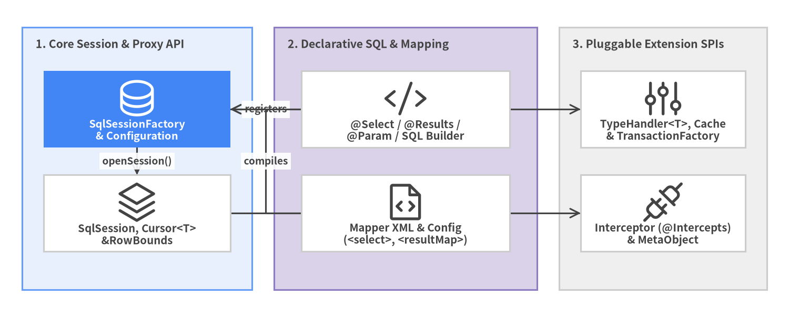

API & XML Catalog Overview
Welcome to the MyBatis 3 (v3.6.0) API & XML Reference Catalog. Every public Java interface, class, annotation, SPI contract, and XML DTD/XSD element across org.apache.ibatis.* is indexed in the left sidebar with instant / keyboard filtering and Drawlib architecture diagrams.

Source Code
from drawlib.canvas import save, setup
from drawlib.diagrams.architecture import ArchitectureDiagram, Node, NodeGroup, PhosphorIcon
from drawlib.styles import Colors, Styles
setup(width=144, height=58, dpi=150)
d = ArchitectureDiagram(
node_style=Styles.Dark,
node_text_style=Styles.DarkBold.patch(text_size=9.8),
edge_style=Styles.Dark.patch(line_width=1.5),
edge_text_style=Styles.DarkBold.patch(text_size=9.2),
node_card_style=Styles.Neutral.patch(shape_fill_color=Colors.White),
)
core = d.add(
NodeGroup(
"1. Core Session & Proxy API",
width=42,
height=48,
style=Styles.PrimaryNeutral,
text_style=Styles.DarkBold.patch(text_size=10.2, halign="left", valign="top"),
),
xy=(4, 5),
)
n_fac = core.add(
Node(
"SqlSessionFactory\n& Configuration",
icon=PhosphorIcon.DATABASE,
width=34,
height=14,
style=Styles.White,
text_style=Styles.WhiteBold.patch(text_size=9.6),
card_style=Styles.PrimaryFlat,
),
xy=(21, 33),
)
n_ses = core.add(Node("SqlSession, Cursor<T>\n&RowBounds", icon=PhosphorIcon.STACK, width=34, height=14), xy=(21, 14))
decl = d.add(
NodeGroup(
"2. Declarative SQL & Mapping",
width=48,
height=48,
style=Styles.SecondaryNeutral,
text_style=Styles.DarkBold.patch(text_size=10.2, halign="left", valign="top"),
),
xy=(50, 5),
)
n_ann = decl.add(Node("@Select / @Results /\n@Param / SQL Builder", icon=PhosphorIcon.CODE, width=38, height=14), xy=(24, 33))
n_xml = decl.add(Node("Mapper XML & Config\n(<select>, <resultMap>)", icon=PhosphorIcon.FILE_CODE, width=38, height=14), xy=(24, 14))
spi = d.add(
NodeGroup(
"3. Pluggable Extension SPIs",
width=38,
height=48,
style=Styles.Neutral,
text_style=Styles.DarkBold.patch(text_size=10.2, halign="left", valign="top"),
),
xy=(102, 5),
)
n_typ = spi.add(Node("TypeHandler<T>, Cache\n& TransactionFactory", icon=PhosphorIcon.SLIDERS, width=30, height=14), xy=(19, 33))
n_plg = spi.add(Node("Interceptor (@Intercepts)\n& MetaObject", icon=PhosphorIcon.PLUGS, width=30, height=14), xy=(19, 14))
n_ann.connect(n_fac, label="registers")
n_xml.connect(n_fac, label="compiles")
n_fac.connect(n_ses, label="openSession()")
n_fac.connect(n_typ, label="SPI")
n_ses.connect(n_plg, label="intercepts")
d.draw(xy=(0, 0))
save()
Maven / Gradle Artifact Coordinates#
<dependency>
<groupId>org.mybatis</groupId>
<artifactId>mybatis</artifactId>
<version>3.6.0</version>
</dependency>
| Property | Value | Notes |
|---|---|---|
| Maven Coordinate | org.mybatis:mybatis:3.6.0 |
Zero mandatory runtime dependencies (ognl and javassist shaded into org.apache.ibatis.*). |
| JPMS Module Name | Automatic-Module-Name: org.mybatis |
Exports org.apache.ibatis.* packages. |
| Minimum JDK Baseline | Java 11+ (<java.release.version>11</java.release.version>) |
Tested against JDK 11, 17, 21, and 25 in CI. |
| Config DTD / System ID | -//mybatis.org//DTD Config 3.0//EN |
Resolved offline via XMLMapperEntityResolver (mybatis-3-config.dtd). |
| Mapper DTD / System ID | -//mybatis.org//DTD Mapper 3.0//EN |
Resolved offline via XMLMapperEntityResolver (mybatis-3-mapper.dtd). |
Catalog Modules & Quick Navigation#
| Catalog Module | Package Scope | Key Symbols Covered |
|---|---|---|
| 1. Session & Binding API | org.apache.ibatis.session, binding, cursor |
SqlSessionFactoryBuilder, SqlSessionFactory, SqlSession, Configuration, RowBounds, ResultHandler, Cursor<T>, MapperRegistry |
| 2. Annotations & SQL Builder | org.apache.ibatis.annotations, jdbc |
@Select, @Insert, @Update, @Delete, @Results, @Result, @Arg, @One, @Many, @Param, @Options, @SelectProvider, SQL, ScriptRunner, SqlRunner |
| 3. XML Config & Mapper Elements | mybatis-3-config.dtd, mybatis-3-mapper.dtd |
<configuration>, <settings>, <environments>, <mappers>, <select>, <insert>, <resultMap>, <if>, <choose>, <where>, <set>, <trim>, <foreach>, <bind>, <cache> |
| 4. TypeHandler, Cache, Tx & DataSource | org.apache.ibatis.type, cache, transaction, datasource |
TypeHandler<T>, BaseTypeHandler<T>, TypeHandlerRegistry, JdbcType, Cache, PerpetualCache, LruCache, SerializedCache, Transaction, PooledDataSource |
| 5. Plugin SPI, Reflection & Exceptions | org.apache.ibatis.plugin, reflection, exceptions |
Interceptor, @Intercepts, @Signature, Invocation, Plugin, MetaObject, SystemMetaObject, Reflector, ObjectFactory, PersistenceException |